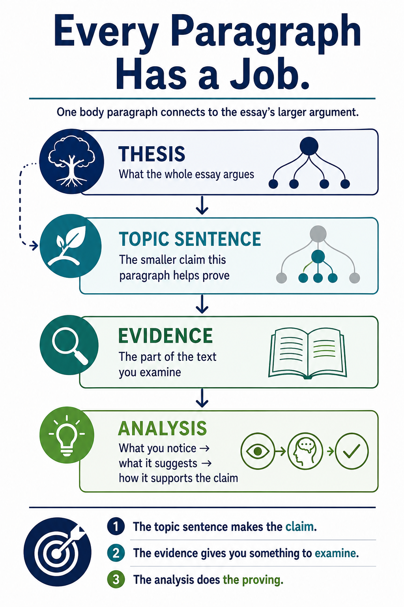

A thesis gives the essay a larger argument. Each body paragraph needs a smaller job that helps build that argument. A strong topic sentence tells the reader what this paragraph is going to contribute.
Useful default: The thesis usually falls near the end of the introduction. The topic sentence usually falls at or near the beginning of a body paragraph. These are reader-friendly conventions, not rigid laws.
Before You Practice: Give Each Paragraph a Job
If you know your thesis but still do not know what to put in each body paragraph, the missing step may be paragraph-level planning. Instead of asking only, “What should I write next?” ask, “What does this paragraph need to prove?”

A body paragraph does one specific piece of the work needed to support the essay's larger argument.Read the full text version of this infographic
Every Paragraph Has a Job
One body paragraph connects to the essay's larger argument.
ThesisWhat the whole essay argues
Topic SentenceThe smaller claim this paragraph helps prove
EvidenceThe part of the text you examine
AnalysisWhat you notice → what it suggests → how it supports the claim
Takeaway:
The topic sentence makes the claim.
The evidence gives you something to examine.
The analysis does the proving.
The visual shows the thesis as the larger argument, with a topic sentence representing one smaller part of that argument. Evidence and analysis then support that paragraph's smaller claim.
1. Thesis vs. Topic Sentence
THESIS
What does the whole essay argue?
Usually broader, because several paragraphs will be needed to develop it.
TOPIC SENTENCE / PARAGRAPH CLAIM
What does this paragraph contribute to that argument?
Usually narrower, because the paragraph needs evidence it can actually analyze.
A useful topic sentence is sometimes called a mini-thesis, but it should not simply copy the thesis in different words. It should develop one part of the larger idea.
2. Watch One Thesis Become Several Paragraph Jobs
THESISThe novel suggests that belonging becomes restrictive when acceptance depends on hiding parts of one's identity.
↓
BODY PARAGRAPH 1The protagonist's changed speech shows that belonging first begins to require self-censorship.
BODY PARAGRAPH 2Her decision to hide a family tradition shows that acceptance eventually requires her to conceal more than language.
BODY PARAGRAPH 3When she finally refuses the group's expectations, the conflict reveals that genuine belonging may require risking exclusion.
Notice that each topic sentence relates to the thesis, but each one gives the essay something new to prove.
3. Strong Topic Sentences Usually Make Interpretive Claims
Observation / subject
There is a lot of glass imagery in the story.
Paragraph claim
The recurring cracked-glass images make the narrator's growing uncertainty visible before she admits that her version of events may be incomplete.
Plot summary
Jonah misses the train and goes home.
Paragraph claim
Jonah's repeated failure to leave the neighborhood makes his missed departures a pattern of hesitation rather than a series of accidents.
The stronger versions give the evidence a purpose. Now the reader knows what the paragraph will try to show.
4. A Topic Sentence Should Fit the Evidence You Can Actually Use
A paragraph claim is not useful if you cannot support it. Topic sentences and evidence should work together:
PARAGRAPH CLAIMThe workers' habit of policing one another shows how authority becomes strongest when its rules no longer require the supervisor's physical presence.
↓
EVIDENCE TO LOOK FORMoments when workers correct, warn, or discipline one another while the supervisor is absent.
↓
ANALYSISExplain how the workers have begun carrying the authority system inside the group themselves.
5. Quick Topic Sentence Check
Before drafting the paragraph, ask:
Does it connect to my thesis?
Does it make an argument rather than only naming a subject or summarizing?
Does it give this paragraph one manageable job?
Does it add something new instead of repeating the thesis?
Can I point to textual evidence that would help support it?
Your topic sentence can change as you draft. If the evidence leads you somewhere more interesting, revise the paragraph claim. That is part of analysis.
Instruction Complete
Now Practice
Distinguish whole-essay theses from paragraph claims, choose a paragraph job that fits the evidence, and repair topic sentences that are too broad, repetitive, or summary-based.
What Should This Paragraph Prove? Practice
✓
Literary Analysis Lab
You did it!
What Should This Paragraph Prove?
Completed
Time
Screenshot this screen if your instructor asked for proof of completion.